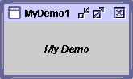

Feedback Form
|
|
Start of Tutorial > Start of Trail > Start of Lesson |
Search
Feedback Form |
Use the information in this lesson and the component how-to sections to help you complete these questions and exercises.
Question 1: Find the component that best fits each of the following needs. Write down both the component’s common name (such as “frame”) and find the component's how-to page online. [Hint: You can use A Visual Index to the Swing Components to help you answer this question.]
Question 1a: A component that lets the user pick a color.
Answer 1a: color chooser
Question 1b: A component that displays an icon, but that doesn’t react to user clicks.
Answer 1b: label
Question 1c: A component that looks like a button and that, when pressed, brings up a menu of items for the user to choose from.
Answer 1c: uneditable combo box
Question 1d: A container that looks like a frame, but that appears (usually with other, similar containers) within a real frame.
Answer 1d: internal frame
Question 1e: A container that lets the user determine how two components share a limited amount of space.
Answer 1e: split paneQuestion 2: Which method do you use to add a menu bar to a top-level container such as a
JFrame?
Answer 2:setJMenuBarQuestion 3: Which method do you use to specify the default button for a top-level container such as a
JFrameorJDialog?
Answer 3:JRootPane'ssetDefaultButtonmethod. (You get the top-level container's root pane using thegetRootPanemethod defined by theRootPaneContainerinterface, which every top-level container implements.)Question 4: Which method do you use to enable and disable components such as
JButtons? What class is it defined in?
Answer 4:setEnabled, which is defined in theComponentclassQuestion 5a: Which Swing components use
ListSelectionModel? [Hint: The “Use” link at the top of the specification for each interface and class takes you to a page showing where in the API that interface or class is referenced.]
Answer 5a:JListandJTableQuestion 5b: Do those components use any other models to handle other aspects of the components’ state? If so, list the other models’ types.
Answer 5b:JListalso uses aListModel, which holds the list's data.JTableuses aTableModelto hold its data and aTableColumnModelto manage the table's columns.Question 6: Which type of model holds a text component’s content?
Answer 6:Document
Exercise 1. Implement a program with a GUI that looks like the one shown below. Put the main method in a class named
MyDemo1.
Answer 1: See
MyDemo1.java. Here's the code that adds the bold, italicized text:
JLabel label = new JLabel("My Demo"); frame.getContentPane().add(BorderLayout.CENTER, label); label.setFont(label.getFont().deriveFont(Font.ITALIC | Font.BOLD)); label.setHorizontalAlignment(JLabel.CENTER)Exercise 2. Make a copy of
MyDemo1.javanamedMyDemo2.java. Add a menu bar toMyDemo2.
Answer 2: SeeMyDemo2.javaJMenu menu = new JMenu("Menu"); JMenuBar mb = new JMenuBar(); mb.add(menu); frame.setJMenuBar(mb);Exercise 3. Copy
MyDemo1.javatoMyDemo3.java. Add a button (JButton) toMyDemo3.java. Make it the default button.
Answer 3: SeeMyDemo3.javaJButton b = new JButton("A button"); frame.getContentPane().add(BorderLayout.PAGE_END, b); frame.getRootPane().setDefaultButton(b);
|
|
Start of Tutorial > Start of Trail > Start of Lesson |
Search
Feedback Form |
Copyright 1995-2004 Sun Microsystems, Inc. All rights reserved.